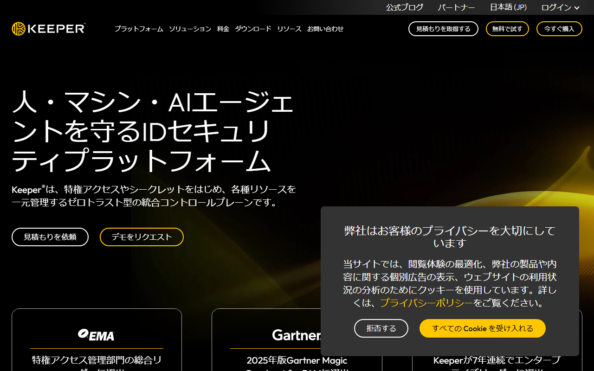
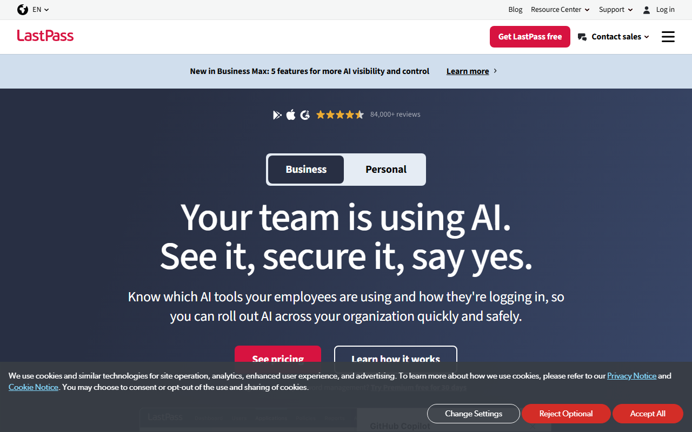

1Passwordの評判と安全性｜公開レビューでわかるメリット・デメリット
個人やチームのログイン情報を保管し、端末やブラウザで自動入力できるパスワード管理サービスが1Passwordです。
この記事では、公開レビューをもとに評判を紹介します。安全性とSecret Key、復旧方法も解説。料金と日本語対応も扱います。
1Passwordの評判：良い点3つと気になる点3つ
- 良い点：自動入力・端末同期・共有Vault
- 安全機能：Secret Key・Watchtower
- 気になる点：初期設定・移行・復旧管理
- 無料枠：常設なし・14日間の無料体験
- 月払い：Individualは$4.99/月
- 月払い：Familiesは$7.99/月
複数端末での自動入力に加え、家族やチームの共有と復旧まで整えたい人には1Passwordがおすすめです。
日本語の公式ページで、個人・家族向けプランと無料体験の入口を確認できます。
良い評判：自動入力・同期・共有の使いやすさが評価されている

画面上部は日本語で表示され、個人向け・法人向けの切り替えと「無料で開始」の入口が見えます。
ITreviewの法人利用者レビューでは、自動入力とパスワード生成が評価されています。共有Vaultや監査ログも良い点に挙がっています。投稿者の属性が示された、業務利用者による評価です。個人利用の操作感とは分けて読みましょう。App Storeのレビューは、Apple版アプリの評価を見る材料になります。ここからは、公開レビューの感想と公式資料に記載された機能を分けて紹介します。
パスワード生成と自動入力
ITreviewでは、業務アカウントの複雑なパスワードを生成し、保存から入力までまとめられる点が評価されています。生成・保存・自動入力は、公式資料にも記載された機能です。ただし、自動入力が偽サイトを必ず見抜くわけではありません。入力候補が出なければ、URLが正しいかを見てから手動で貼り付けます。
複数端末の同期とVault共有
ITreviewの業務利用者からは、共有Vaultと監査ログも良い点として挙げられています。公式仕様では、個人用Vaultと共有Vaultを分け、共同利用する情報だけを共有できます。Familiesは家庭内での共有、Teams Starter PackとBusinessは業務利用向けです。組織で使うなら、退職者を共有から外す手順も決めておきます。
Watchtowerによるリスクの把握
Watchtowerは、弱いパスワードや使い回し、侵害が判明した認証情報を知らせる機能です。これは利用者の感想ではなく、公式資料に記載されています。警告が出たら、対象サービス側でパスワードを変更します。金融・メール・業務アカウントの順に対応しましょう。
悪い評判・デメリット：無料プランがなく、移行と初期設定に手間がかかる
常設無料プランがなく、移行時にはデータの整理が必要です。復旧情報も自分で守らなければなりません。 ITreviewの業務利用者レビューでは、人数に応じて費用が増える点が改善要望に挙がっています。共有Vaultの設計やルール作りに手間がかかるという指摘もあります。人数課金への不満は、業務利用者の話です。個人で使うなら、無料トライアル後も継続費用を払えるかで判断します。
常設の無料プランがない
個人向けと家族向けには14日間の無料トライアルがありますが、継続利用には有料契約が必要です。無料で使い続けたいなら、Bitwardenも比較候補です。
初期設定とデータ移行に手間がかかる
Bitwardenから移す場合、共有コレクション内の項目とパスキーは取り込まれません。Bitwardenには添付ファイルを含められるZIP形式もあります。ただし、1Password公式手順で使う暗号化JSONには添付が含まれません。添付ファイルは別途移します。移行後は、重複した項目とパスキーを点検します。添付ファイルと共有先も見直し、機密情報を含む移行用ファイルを安全に削除します。
復旧情報を自分で管理する必要がある
Account Passwordを忘れたときや、Secret Keyを紛失したときに備えます。Emergency Kitは別の安全な場所へ保管してください。個人・家族向けではRecovery Codeも利用できます。一人で使う場合は、管理者による復旧に頼れません。Emergency KitとRecovery Codeは、端末を失っても取り出せる場所へ分けて保管します。
公式サイトでは、自動入力やWatchtowerが紹介されています。家族・チーム向けの共有機能も掲載されています。
1Passwordの安全性と危険性を3層に分けて確認する
安全性は、サービス側の設計だけで決まりません。サービス側／端末・利用者側／復旧・共有の3層に分けると、守られる範囲と残る危険性が見えてきます。
サービス側の設計で守られる範囲
サービス側の防御として、ゼロ知識設計とエンドツーエンド暗号化を掲げています。保管庫を守るため、Account PasswordとSecret Keyを組み合わせます。同社は第三者によるセキュリティ評価も公開しています。ただし、第三者評価は将来の事故を防ぐ保証にはなりません。
端末・利用者側に残るリスク
利用者側には、マルウェアやフィッシングのリスクが残ります。端末の紛失と弱いAccount Passwordにも備えが必要です。端末のロックを設定し、更新を欠かさないようにします。2要素認証も有効にしましょう。自動入力が働かないページでは、URLを確かめてください。
復旧や共有で起こりうる事故
共有Vaultの対象を誤ると、本来見せない情報まで共有されます。Familiesでは個人情報と家族の共通アカウントを分けます。業務チームでは組織管理者を決め、入退社時に権限を見直します。単独利用なら、Emergency KitとRecovery Codeを普段使う端末だけに保存しないでください。
「セキュリティキー」はSecret Key・物理キー・パスキー・SSHキーで役割が違う
「セキュリティキー」を調べると、似た言葉が複数出てきます。よく混同されるのは、次の用語です。互いに代用はできません。
- Secret Key
- 物理セキュリティキー
- パスキー
- SSHキー
Secret Keyは1Passwordアカウントを守る鍵
Secret Keyは1Passwordアカウント固有の秘密情報です。Account Passwordと組み合わせて、保管庫を守ります。物理デバイスではありません。新しい端末へのサインインや復旧に使います。Emergency Kitとともに、持ち歩く端末とは別の場所へ保管します。
物理セキュリティキーとパスキーは認証手段
物理セキュリティキーは、対応サービスの認証に使うFIDOデバイスです。パスキーは、対応サイトへのサインイン情報にあたります。どちらもSecret Keyとは役割が異なります。物理キーやパスキーを使う前に、端末とブラウザの対応状況を調べます。対象サイトも対応しているか見ておきましょう。
SSHキーは開発環境で使う鍵
SSHキーは、サーバーやコード管理サービスなどの開発環境へ接続する認証鍵です。保管庫で扱えますが、アカウントを守るSecret Keyとは別物です。開発用途がなければ、利用開始時に用意する必要はありません。
復旧・家族共有・データ移行で契約前に確認すること
FamiliesではFamily Organizer、業務向けプランでは組織管理者が復旧を助けられる場合があります。一人で使うなら、Emergency KitとRecovery Codeを事前に保管しておきます。移行後は「取り込めた件数」だけでなく、取り込めなかった項目まで点検してください。
一人で使う場合は復旧情報を別に保管する
Emergency KitとRecovery Codeを同じ端末の中だけに置くと、故障や紛失時にまとめて失います。紙に印刷するか、暗号化した別の媒体へ保存しましょう。普段使う端末を失っても取り出せる場所へ分けます。家族へ託す場合も、共有Vaultへ無条件に入れてはいけません。必要なときだけ取り出せる保管方法を決めておきます。
家族・チームでは復旧担当と共有範囲を決める
Familiesは最大5人の家族向けで、Family Organizerが復旧を助けられる場合があります。業務利用はTeams Starter PackまたはBusinessを選び、組織管理者が復旧を担当します。家庭でも業務チームでも、復旧担当者がアカウントに入れない場合も想定しておきます。共有Vaultには、共同利用する情報だけを入れてください。
移行後は取り込めなかった項目まで確認する
Bitwardenの共有コレクションとパスキーは1Passwordへ取り込まれません。添付ファイルも、1Password公式手順で使う暗号化JSONとは別に移す必要があります。移行後は、重要なサービスへログインできるかを試します。共有先と重複も点検してください。移行ファイルを削除した後で、元のサービスを解約します。
料金・日本語対応・日本からの始め方
常設無料プランはなく、14日間の無料体験後は有料です。日本語UIと日本語の問い合わせフォームがあり、日本から公式サイトで申し込めます。
個人と家族でプランを選ぶ
Individualを年払いで新規契約すると、初年度プロモは月額$2.99相当です。通常の年払いは月額$3.99相当、月払いは$4.99。Familiesは最大5人で、年払い初年度プロモは月額$4.49相当です。通常の年払いは月額$5.99相当、月払いは$7.99です。
1ドル=158円で換算すると、初年度プロモの月額相当はIndividualが約472円です。Familiesは約709円。執筆時点の目安であり、為替により変動します。一人で使うならIndividual、家族で共有と復旧まで整えるならFamiliesを基準にします。業務チーム向けには、Teams Starter PackとBusinessがあります。Teams Starter Packは10人分を含み、年払いで月額$24.95。Businessは年払いで1ユーザー月額$8.99です。
日本語UIと問い合わせ窓口の範囲
Web画面とアプリは日本語に対応しています。日本語の問い合わせフォームもありますが、対応言語や返信までの目安時間はフォーム上に明記されていません。
日本語サイトがあっても、アプリや有人サポートまで日本語とは限りません。有人サポートから日本語の返信が必要なら、契約前に返信言語を問い合わせておきます。
日本からの支払いと解約
Visa／Mastercard／American Express／Discoverに対応しています。Diners Club／UnionPay／JCBも利用可能。PayPalの直接払いは公式の支払い方法一覧にありません。請求書はメールで届き、Billing設定のInvoicesからも取得できます。
無料トライアル中にキャンセルすれば、料金はかかりません。トライアル終了後は自動で有料契約へ移行します。有料契約はBillingから自分で解約でき、請求期間の終了まで利用可能です。請求期間が終わってアカウントが凍結されても、データの閲覧とエクスポートは可能。返金は原則ありません。
料金ページでは、年払いの初年度プロモと通常料金を見比べられます。無料体験後の契約条件も分かります。
1Passwordが合わない場合の代替候補
恒久無料を優先するなら、候補はBitwarden。日本円表示と制限付き無料枠を重視するなら、Keeper Securityです。LastPassにも無料枠があります。ただし、使えるデバイスタイプの制限と過去の侵害履歴も検討材料になります。
無料で使い続けたいならBitwarden

日本語の画面に「無料で始める」と表示され、個人向けと法人向けの入口が分かれています。
BitwardenのFreeは、保存件数も端末数も無制限。オープンソースで、エンドツーエンド暗号化と第三者監査を掲げています。無料のままパソコンとスマートフォンの両方を使える点が、1Passwordとの大きな違いです。
有料機能には、事前設定した連絡先へ緊急時のアクセスを委ねるEmergency Accessがあります。有料プランを選ぶなら、復旧方法も比較材料になります。
Bitwarden公式サイトには、Free／Premium／Familiesの機能と料金が掲載されています。無料の範囲で足りるか、有料の復旧機能まで要るかを比べられます。
日本円表示と復旧・安全機能で選ぶならKeeper Security

日本語表示を選べる画面で、「無料で試す」と購入の入口が並んでいます。
Keeper Freeはモバイル1台、保存レコード10件まで。デバイス間の同期には対応していません。2要素認証は利用できますが、FIDO2セキュリティキーは無料版の対象外です。個人向けの30日間無料トライアルが終わると、Keeper Freeへダウングレードされます。日本円表示と制限付き無料枠を重視する人向けで、FIDO2を無料で使いたい人には合いません。
日本語UIがあり、個人プランは年額4,915円、ファミリーは5ユーザーで年額9,811円です。無料版は制限が大きいため、常用する端末数と保存件数を先に数えておきましょう。
Keeper Securityの日本語公式サイトには、無料版の制限と個人・家族向けプランの日本円料金が載っています。FIDO2セキュリティキーや複数端末同期が必要なら、有料プランの対象機能まで比べてください。
LastPassは無料枠の制限と侵害履歴まで確認する

英語の公式画面には、BusinessとPersonalの切り替えと無料版への入口があります。
LastPass Freeはパスワード保存数が無制限ですが、使えるのはPCかモバイルのどちらか一方のデバイスタイプです。自動入力／ダークウェブモニタリング／基本的な共有を含み、Premiumの30日間無料トライアルもあります。
公式サイトの言語選択に日本語はなく、アプリUIがどこまで日本語に対応するかも不明です。日本語の有人サポートも、公式一次情報だけでは分かりません。比較したいのは、無料枠と使う端末の組み合わせ。日本語が必要な範囲や、過去の侵害履歴をどう評価するかも判断材料になります。
LastPass公式サイトには、Freeのデバイスタイプ制限と有料プランの条件が載っています。パソコンとスマートフォンの両方で使う予定なら、契約前に制限を比べてください。
まとめ：復旧方法と共有範囲まで決めてから選ぶ
選ぶ基準は、安全性に加えて、復旧や共有まで自分で管理できるかどうか。 自動入力と同期だけなら、無料の候補でも足ります。共有と復旧まで備えたい人には、1Passwordが向いています。
向いているのは、次の条件に当てはまる人です。
- 複数端末でパスワードの生成・保存・自動入力をまとめたい
- 家族での共有にはFamilies、業務チームにはTeams Starter PackまたはBusinessを使いたい
- 有料でも、Emergency Kitの保管先や復旧担当を決めて使いたい
次の条件なら、ほかの製品も比べてみてください。
- 恒久無料で使い続けたい
- 復旧情報の自己管理や初期移行の作業を減らしたい
- 日本語サポート／無料枠／過去の侵害履歴を重視したい
契約前に、次の項目を確かめます。
- 選ぶプラン
- トライアル終了後の課金
- 復旧担当
- 移行対象
- 支払い方法
安全性を製品任せにせず、日々続けられる管理方法まで決めてください。
日本語の公式サイトには、無料体験後の料金と支払い条件が掲載されています。利用開始の手順も読めます。